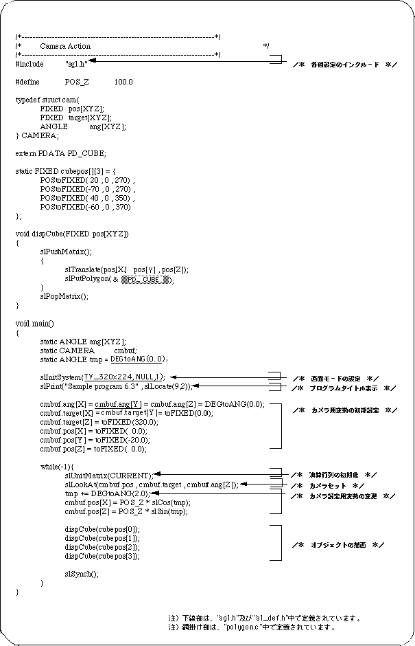
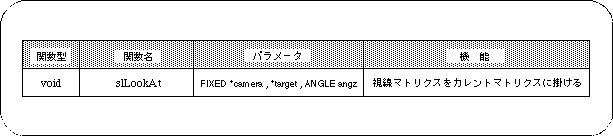

Return to previous page | Return to menu | Go to next page
The following program list shows the changes in the image when the camera parameters are changed and moved in 3D space. In the space, cubes with different polygon colors for each face are placed away from the target coordinates of the camera.


In this chapter, the functions in the following table were explained.
